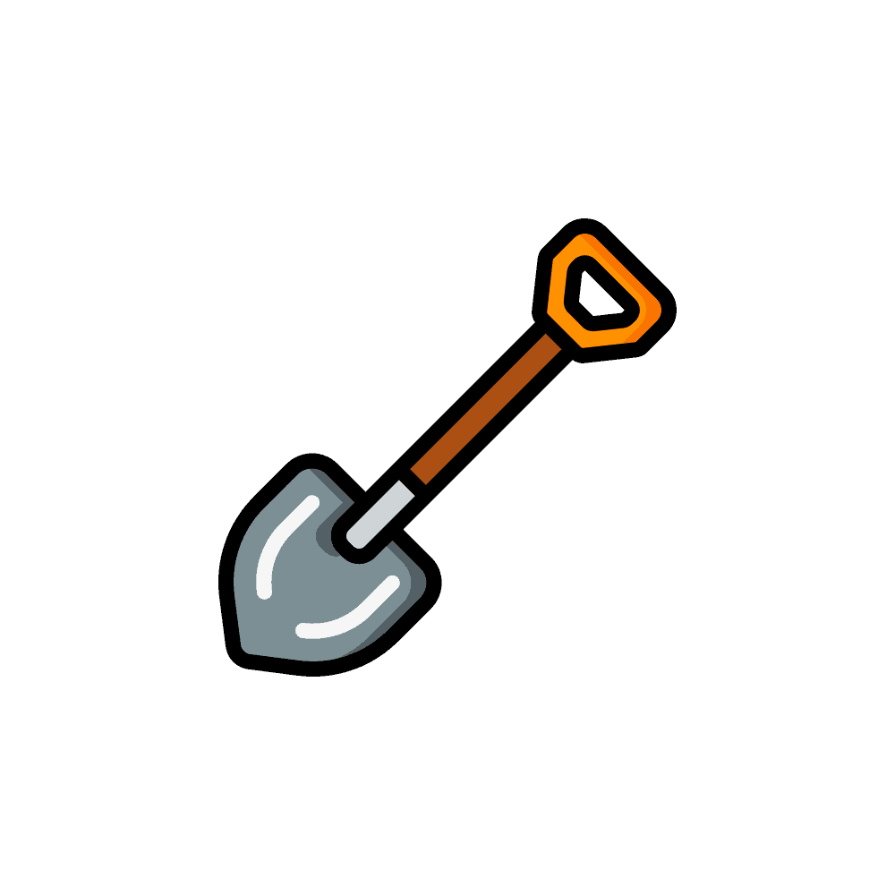
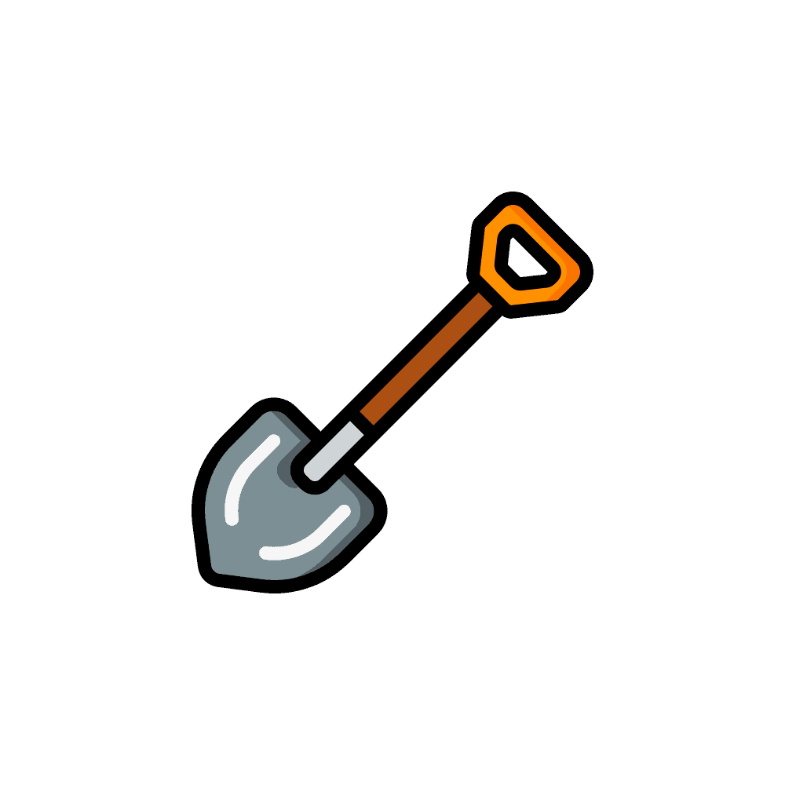

Tamara; Cuanto tiempo ha pasado, te sigo amando desde la primera vez que te ví en aquel lejano Mad City jsjs, Hermosa. Sólo te quiero recordar atravez de esta página que te amo, te adoro, te quiero. Nunca me arrepentiré de hablarte todos los días porque me encantas y como vos me decís, sos mi luciernaga, Tamara. Esta página va para ti amor, te amo. 💖
 
